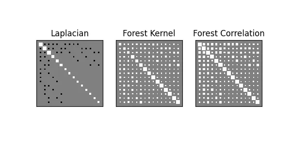
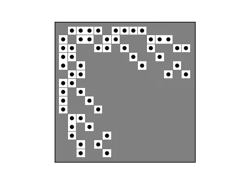
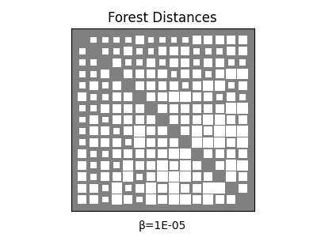

Kernels
As in, (positive semidefinite) measures of similarity between points
This section covers functions that take and return square matrices (SimsMat), so we will go over these helper functions located in various modules:
These are primarily written as utilities for the tools in the associations module, but may be of interest in their own right.
Much of the difficulty of "straightening out" what a given square matrix represents comes from lack of clarity over the differences between them, and how they relate to one-another.
- Graph (e.g. adjacency, Laplacian, etc.),
- Kernel (e.g. heat, forest accessibility, page-rank, etc.),
- Distance (shortest-path lengths, generalized euclidean, etc.)
flowchart LR
Graph <--> Kernel
Kernel <--> Distance
This page covers a number of traditional ways to travel between these representations.
import networkx as nx
import numpy as np
import matplotlib.pyplot as plt
from pathlib import Path
plt.rc('figure', figsize=(4.0, 3.0))
imgpath=Path('../../docs/user-guide/img/')
Graph → Kernel (proximity)
import networkx as nx
L = nx.laplacian_matrix(nx.dorogovtsev_goltsev_mendes_graph(3)).toarray()
A = np.diag(np.diag(L))-L
Future versions of affinis may include more expansive coverage of kernels on graph vertices.
For now, we mostly provide an interface to the forest accessibilities kernel, which is also a proximity (i.e. satisfies the proximity inequality).
This so-called forest kernel is a parameterized form of an inverse regularized Laplacian:
Entries in this proximity matrix turn out to be the probability that a node ends up sharing a tree with another node, in a randomly sampled spanning forest of the graph (hence the name). Since \(I+\beta L\) is positive definite (non-singular), the inversion is guaranteed to exist, and will be provably doubly stochastic.
To Read
See Chebotarev & Shamis (2002) and Avrachenkov et al (2017) for more details on the beautiful Matrix Forest Theorem, which plays a key role in the inference performed by Forest Pursuit
Our implementation is slightly more efficient than basic np.linalg.inverse, since we use the dpotrf and dpotri for cholesky inversion with cached indexing for PosDef matrices.
Finally, we might want a logarithmic similarity, which has useful properties described in the kernels reference above. It is not a proximity by itself, but instead the exponentiation of one. This can be acheived through diagonal normalization, much like correlation or cosine similarity measures use.
See forest, forest_correlation.
from affinis.proximity import forest, forest_correlation, bilinear_kern
from affinis.plots import hinton
f,ax = plt.subplots(ncols=3, figsize=(6,3))
hinton(L, ax=ax[0])
hinton(forest(L, beta=1.),ax=ax[1])
hinton(forest_correlation(L, beta=1.), ax=ax[2])
ax[0].set_title('Laplacian')
ax[1].set_title('Forest Kernel')
ax[2].set_title('Forest Correlation')
plt.savefig(imgpath/'laplacian.webp')

Another useful tool in this module is the sinkhorn function, which performs iterated proportional fitting (i.e. the Sinkhorn-Knopp iterations) to project a sqare matrix to it's nearest doubly stochastic counterpart.
This might e.g. be a useful way to approximate the forest kernel, given some other similarity on the graph. It's also the basis for doubly_stochastic_filter.
from scipy.sparse.csgraph import shortest_path
from affinis.proximity import sinkhorn
print(sinkhorn(np.exp(-shortest_path(A))).sum(axis=0))
"""[OUT]:
[1.0000004 1.0000004 1.0000004 1.00000007 1.00000007 1.00000007
1.00000089 1.00000089 1. 1. 1.00000089 1.
1. 1. 1. ]
""";
Kernel → Graph (filter)
It's commonly necessary to select a threshold value over which an edge "exists" and below which it doesn't. Affinis implements this simple thresholding as threshold_value
Since edge recovery is very often an unsupervised problem, a common way to select a relatively sparse threshold value is by removing edges until just before the graph would become disconnected.
affinis has implemented a fast routine for removing edges until the graph is about to become disconnected (using a binary search and breadth-first connectivity checks).
from affinis.filter import threshold_connected
hinton(A)
hinton(-threshold_connected(forest_correlation(L)), marker='.')
plt.savefig(imgpath/'filter-recovery.webp')

Kernel → Distance (distance)
From a given kernels, by we are able to turn them into (Euclidian) distance metrics, using the bilinear form. See docs.
For forest kernels, this has been shortened to quickly retrive the linear and logarithmic forms of the bilinear distance metric on a graph using adjusted_forest_dists and generalized_graph_dists, respectively.
Interestingly, in the limit of \(\beta\rightarrow\infty\), the adjusted_forest_dists will tend toward the Commute-time kernel (i.e. effective resistances). The same is true for the generalized_graph_dists, though in this normalized case, the lower limit \(\beta\rightarrow 0^+\) will also converge to a scalar multiple of the shortest path distances. In this way, the forest distances can be thought of as a smooth interpolation from the shortest paths to the effective resistances.
from affinis.distance import adjusted_forest_dists, generalized_graph_dists
import matplotlib.animation as animation
fig, ax = plt.subplots()
scat = hinton(generalized_graph_dists(L, beta=1e-5), ax=ax)
plt.title('Forest Distances')
annot = ax.annotate('β=',(0.5,-.1), xycoords='axes fraction', ha='center')
betas = np.logspace(-5,5)
betas = np.hstack((
np.ones_like(betas)*1e-5,
betas,
np.ones_like(betas)*1e5,
betas[::-1]
))
def update(frame):
beta = betas[frame]
D = generalized_graph_dists(L, beta=beta)
newscat = hinton(D, update_from=scat)
annot.set_text(f'β={beta:.0E}')
return (newscat ,annot)
ani = animation.FuncAnimation(fig=fig, func=update, frames=betas.shape[0], interval=30)
ani.save(filename=imgpath/"forest-dists.webp", writer="pillow")
# hinton(bilinear_dists(forest(L)))
